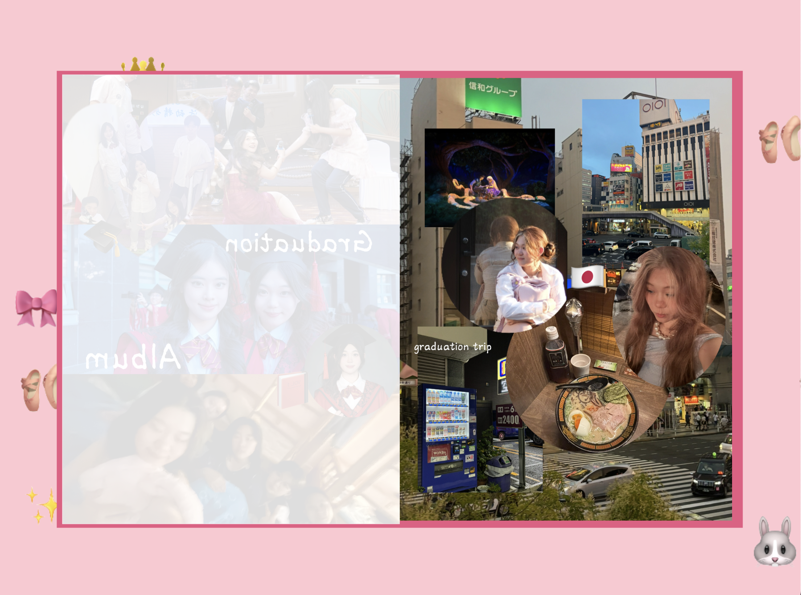
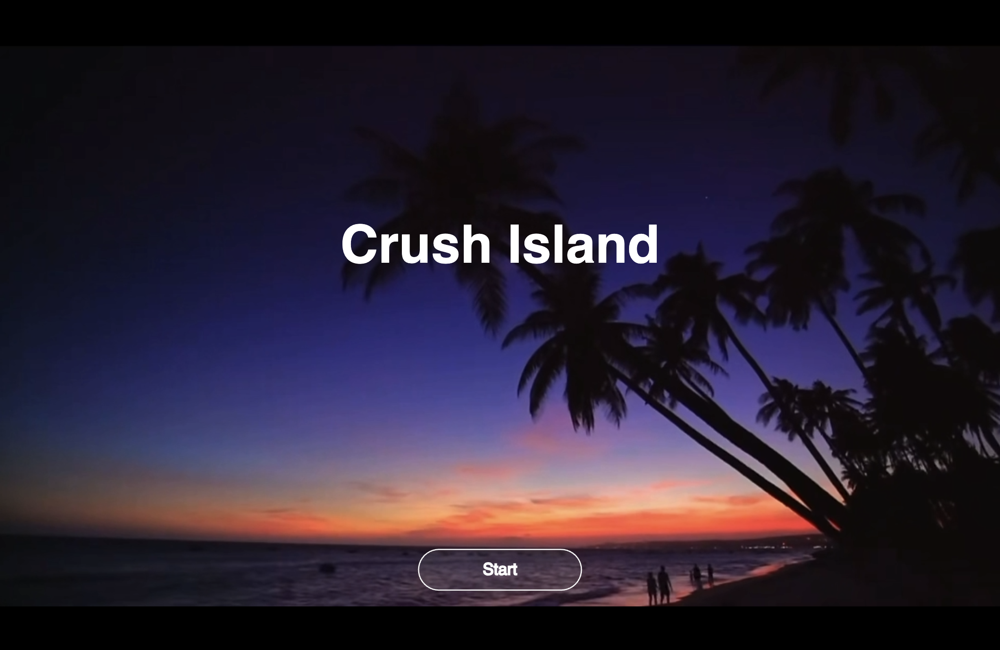
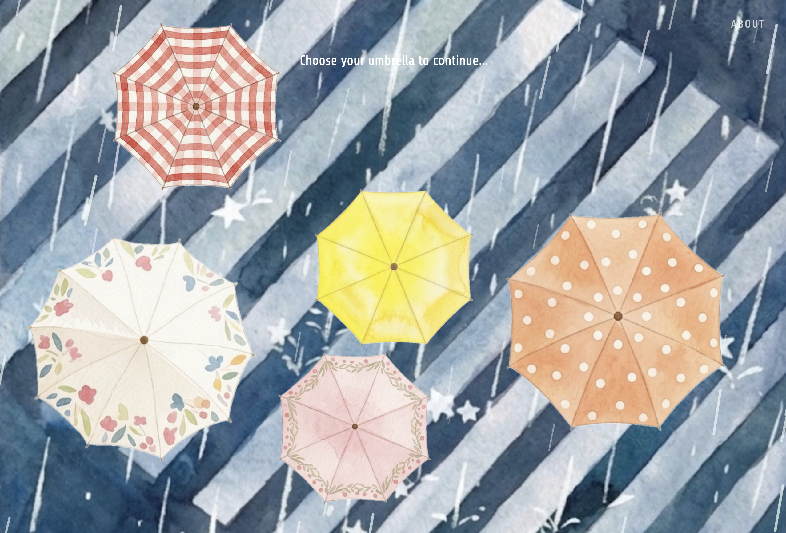

Interdisciplinary Media Arts & Practice Portfolio
Exploring the boundaries between visual storytelling, spatial installation, moving image, and creative computing.
Photography series focusing on composition, light, emotion, and visual narrative.
[这里可以简单补充 Dilemma 的作品描述]


[这里可以简单补充 Spiritual Sustenance 的作品描述]


[这里可以简单补充 Missing Half 的作品描述]


[大学摄影课项目 1 简介]


[大学摄影课项目 2 简介]


[大学摄影课项目 3 简介]


Bridging 2D imagery with 3D physical spaces, materials, and mixed media.
[这里填写“摄影+装置”作品的创作说明。]

[这里填写“实验短片+装置摄影”作品的创作说明。]

[这里填写在 Art and Design Studio 课上完成的空间/立体/综合材料作品。]

Cinematic storytelling, camera operation, and time-based media experiments.
Served as the Camera Assistant in this professional short film production. Responsible for camera setups, focus pulling assistance, and supporting the Director of Photography on set.
Explorations in creative technology, p5.js interaction, and web experiments.
An interactive diary chronicling 12 months with music and visual memories.
Launch Interactive Sketch →A decision-making web narrative exploring relationship personalities through story choice.
Play Interactive Game →A therapeutic web platform for young adults featuring rain animations, white noise, and message boards.
Visit Web Platform →Hi! I'm Angelina Sun, an interdisciplinary creator passionate about blending traditional visual arts with emerging digital technologies.
Starting from a foundation in lens-based photography, my practice evolved into spatial installation, video production, and active exploration in creative coding. I am continuously drawn to how media technologies can extend human emotions and construct therapeutic, narrative-driven interactive experiences.
Seeking to transfer into the Media Arts + Practice (MA+P) program, I aim to deepen my technical expertise, engage with immersive environments, and expand my artistic boundary in human-computer interaction.